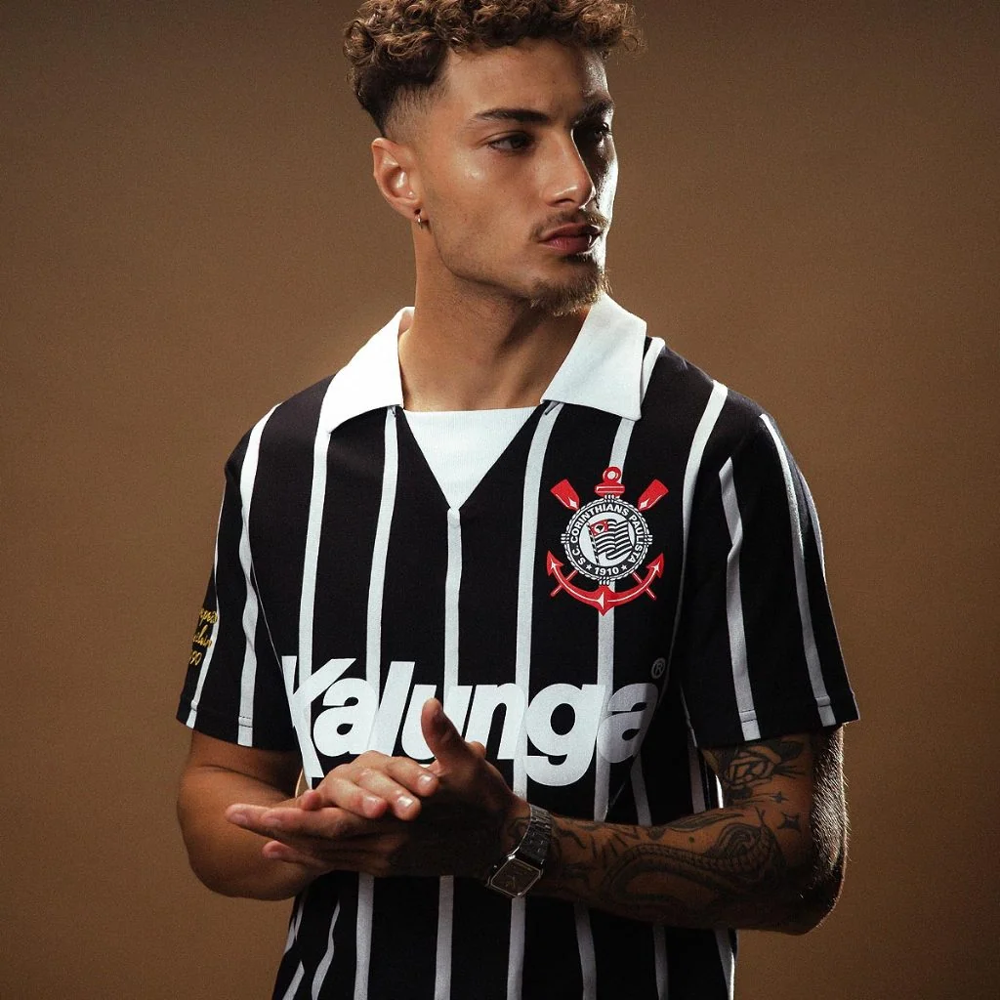

Camisas retrô do Corinthians: o que observar antes de comprar
Uma camisa retrô pode lembrar uma temporada, um jogador ou a primeira ida ao estádio. Mas nem toda peça anunciada como retrô é uma reprodução fiel ou licenciada. Veja os detalhes que merecem atenção.

RETRÔ / ARQUIBANCADAO que exatamente é uma camisa retrô?
Na prática, o termo pode indicar peças inspiradas em uniformes antigos, releituras com mudanças de gola ou tecido, camisetas temáticas e reproduções de determinadas temporadas. A palavra retrô, sozinha, não confirma que o produto foi produzido na época ou que tem origem oficial.
Comece pensando no que você quer: uma lembrança visual de um momento da história do clube ou uma peça com detalhes fiéis a determinado modelo? São objetivos diferentes. Uma releitura pode ser bonita, desde que o anúncio deixe sua proposta clara.
Observe gola, listras, escudo e inscrições
Os detalhes contam a história visual das camisas: tipo de gola, largura e posição das listras, bordado ou impressão do escudo, numeração e inscrições. Alguns modelos fazem referências a patrocinadores e expressões associados a épocas específicas.
Se o anúncio disser que reproduz exatamente uma determinada temporada, compare com registros confiáveis daquela época. Não conclua que um conjunto de elementos é historicamente preciso apenas porque aparece em uma foto de venda.
Democracia Corinthiana e memória da torcida
Peças que fazem referência à Democracia Corinthiana e ao número 8 chamam atenção pelo significado cultural e esportivo. O interesse pode nascer tanto do design quanto do desejo de lembrar um período marcante da história do clube.
Para conhecer o contexto por trás dessas estampas, procure fontes históricas, entrevistas e registros do período. O valor simbólico de uma camiseta não dispensa a conferência de sua procedência comercial.
Como verificar procedência e licenciamento
Afirmações como “original”, “oficial” e “licenciado” precisam de confirmação independente. O título escrito pelo vendedor não é, por si, prova de autenticidade. Confira informações sobre fabricante, etiquetas, empresa responsável, condições de venda e, quando disponível, documentação da licença.
Leia avaliações com fotos do produto efetivamente entregue. Examine comentários sobre qualidade de acabamento, costuras, diferenças de cor e durabilidade das estampas. Avaliações ajudam, mas também não substituem a verificação da origem.
Escolha o tamanho pelo caimento, não pela década
Uma polo de inspiração antiga pode ter proporções muito diferentes de uma camiseta esportiva moderna. Compare as medidas em centímetros com uma peça que você já usa. Observe comprimento, manga e gola — três elementos que mudam bastante a experiência de uso.
Se você planeja colecionar e guardar a camisa, confira também as instruções de conservação de estampas, bordados e aplicações antes de lavar ou passar.
DO GUIA PARA A VITRINE.
Veja produtos relacionados. A Shop Fiel é independente e pode receber comissão pelas indicações; preço, estoque, procedência e entrega devem ser conferidos na Shopee.